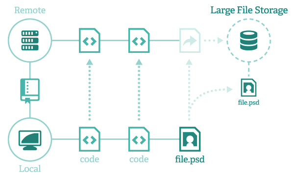

Open LFS uses the same underlying git-lfs core, but data goes directly to your own Amazon AWS account, instead of the GitHub one*.

You can choose the datacenter closer to you, so that the upload and download times are greatly improved.
You are in full control of your data, at no extra cost. You pay only what you use, and you can take advantage of the free 5GB Amazon account.
Cost in Amazon is about $0.0300 per GB -> 50GB cost $1.5/month.